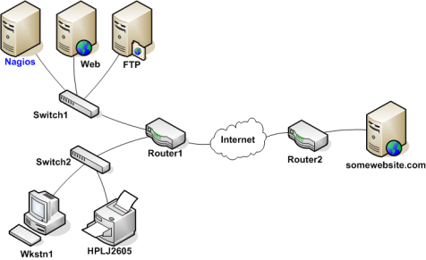
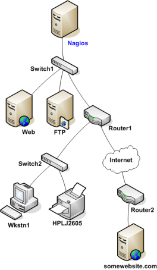
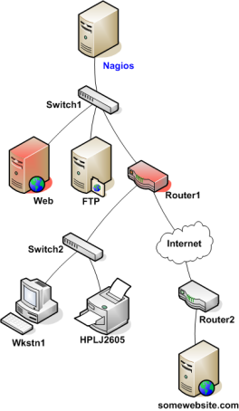
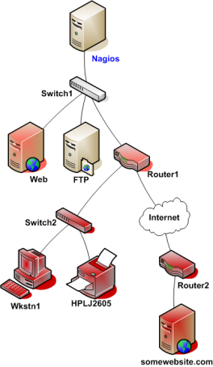

Up To: Contents
Up To: Contents
 See Also: Host Checks, Passive Host State Translation
See Also: Host Checks, Passive Host State Translation
Introduction
If you've ever work in tech support, you've undoubtably had users tell you "the Internet is down". As a techie, you're pretty sure that no one pulled the power cord from the Internet. Something must be going wrong somewhere between the user's chair and the Internet.
Assuming its a technical problem, you begin to search for the problem. Perhaps the user's computer is turned off, maybe their network cable is unplugged, or perhaps your organization's core router just took a dive. Whatever the problem might be, one thing is most certain - the Internet isn't down. It just happens to be unreachable for that user.
Nagios is able to determine whether the hosts you're monitoring are in a DOWN or UNREACHABLE state. These are very different (although related) states and can help you quickly determine the root cause of network problems. Here's how the reachability logic works to distinguish between these two states...
Example Network
Take a look at the simple network diagram below. For this example, lets assume you're monitoring all the hosts (server, routers, switches, etc) that are pictured. Nagios is installed and running on the Nagios host.

Defining Parent/Child Relationships
In order for Nagios to be able to distinguish between DOWN and UNREACHABLE states for the hosts that are being monitored, you'll need to tell Nagios how those hosts are connected to each other - from the standpoint of the Nagios daemon. To do this, trace the path that a data packet would take from the Nagios daemon to each individual host. Each switch, router, and server the packet encounters or passes through is considered a "hop" and will require that you define a parent/child host relationship in Nagios. Here's what the host parent/child relationships look like from the viewpoint of Nagios:

Now that you know what the parent/child relationships look like for hosts that are being monitored, how do you configure Nagios to reflect them? The parents directive in your host definitions allows you to do this. Here's what the (abbreviated) host definitions with parent/child relationships would look like for this example:
define host{
host_name Nagios ; <-- The local host has no parent - it is the topmost host
}
define host{
host_name Switch1
parents Nagios
}
define host{
host_name Web
parents Switch1
}
define host{
host_name FTP
parents Switch1
}
define host{
host_name Router1
parents Switch1
}
define host{
host_name Switch2
parents Router1
}
define host{
host_name Wkstn1
parents Switch2
}
define host{
host_name HPLJ2605
parents Switch2
}
define host{
host_name Router2
parents Router1
}
define host{
host_name somewebsite.com
parents Router2
}
Reachability Logic in Action
Now that you're configured Nagios with the proper parent/child relationships for your hosts, let's see what happen when problems arise. Assume that two hosts - Web and Router1 - go offline...

When hosts change state (i.e. from UP to DOWN), the host reachability logic in Nagios kicks in. The reachability logic will initiate parallel checks of the parents and children of whatever hosts change state. This allows Nagios to quickly determine the current status of your network infrastructure when changes occur.

In this example, Nagios will determine that Web and Router1 are both in DOWN states because the "path" to those hosts is not being blocked.
Nagios will determine that all the hosts "beneath" Router1 are all in an UNREACHABLE state because Nagios can't reach them. Router1 is DOWN and is blocking the path to those other hosts. Those hosts might be running fine, or they might be offline - Nagios doesn't know because it can't reach them. Hence Nagios considers them to be UNREACHABLE instead of DOWN.
UNREACHABLE States and Notifications
By default, Nagios will notify contacts about both DOWN and UNREACHABLE host states. As an admin/tech, you might not want to get notifications about hosts that are UNREACHABLE. You know your network structure, and if Nagios notifies you that your router/firewall is down, you know that everything behind it is unreachable.
If you want to spare yourself from a flood of UNREACHABLE notifications during network outages, you can exclude the unreachable (u) option from the notification_options directive in your host definitions and/or the host_notification_options directive in your contact definitions.